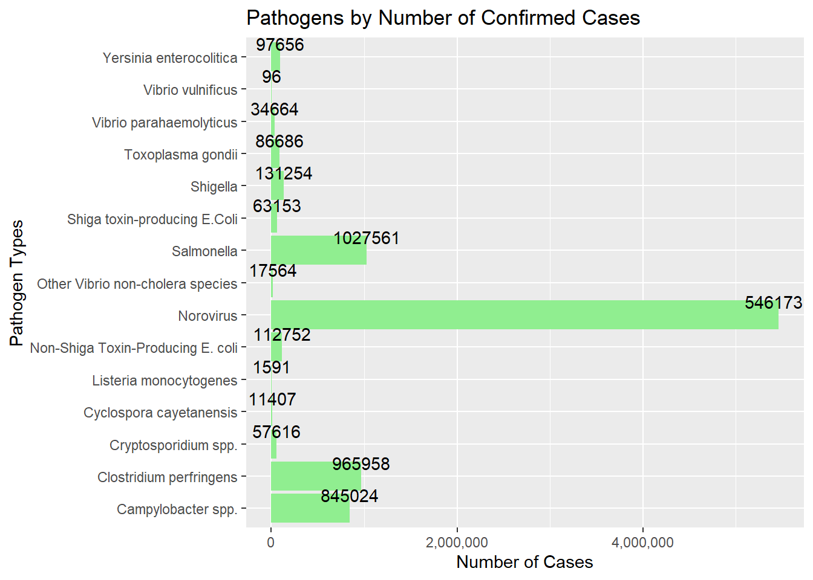
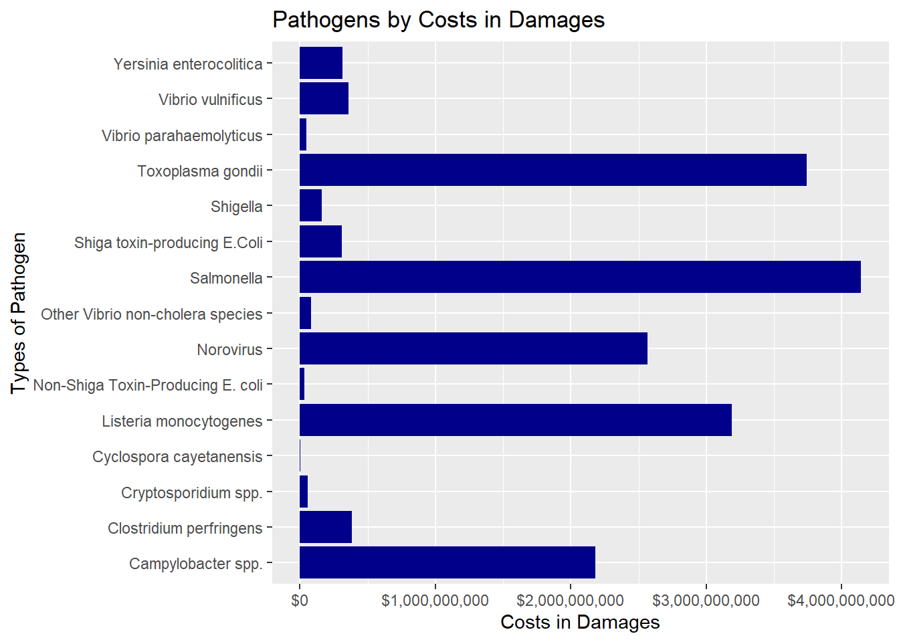

Code
library(tidyverse)
library(dplyr)
library(readr)
library(ggplot2)
library(readxl)
library(lubridate)
knitr::opts_chunk$set(echo = TRUE, warning=FALSE, message=FALSE)library(tidyverse)
library(dplyr)
library(readr)
library(ggplot2)
library(readxl)
library(lubridate)
knitr::opts_chunk$set(echo = TRUE, warning=FALSE, message=FALSE)::: panel-tabset ## Pathogen: Read Data
pathogen <- read_xlsx("/Users/kristinabijaoude/Documents/GitHub/Github Help/601_Fall_2022/posts/_data/Total_cost_for_top_15_pathogens_2018.xlsx",
range = cell_rows(6:20),
col_names = c("Pathogen",
"Cases",
"Cost"))Error: `path` does not exist: '/Users/kristinabijaoude/Documents/GitHub/Github Help/601_Fall_2022/posts/_data/Total_cost_for_top_15_pathogens_2018.xlsx'pathogenError in eval(expr, envir, enclos): object 'pathogen' not foundHere, we are reading the dataset for the top 15 pathogen in terms of costs of damages and number of confirmed cases. It consists of 15 types of pathogens, the number of confirmed cases of each pathogen, and the cost in damages causes by said pathogen.
::: panel-tabset ## Pathogen: Tidy and Mutate Data
pathogen_tidy <- pathogen %>%
drop_na(Pathogen, Cases, Cost)Error in drop_na(., Pathogen, Cases, Cost): object 'pathogen' not foundpathogen_tidyError in eval(expr, envir, enclos): object 'pathogen_tidy' not foundTo start off, we drop missing data with drop_na(). Next, we rename the variables to more specific names with rename().
pathogen_tidy <- pathogen_tidy %>%
rename("Type of Pathogen" = "Pathogen",
"Number of Confirmed Cases" = "Cases",
"Costs in Damages in $" = "Cost")Error in rename(., `Type of Pathogen` = "Pathogen", `Number of Confirmed Cases` = "Cases", : object 'pathogen_tidy' not foundpathogen_tidyError in eval(expr, envir, enclos): object 'pathogen_tidy' not foundNext, we convert the variables with the paste() command below. I specify the currency $ for the first variable, then I separated the numbers with the comma. This way, it’s easier to read the dataset.
# convert numeric to currency
pathogen_tidy$`Costs in Damages in $` <- paste('$',formatC(pathogen_tidy$`Costs in Damages in $`, big.mark = ',', format = 'f')) Error in formatC(pathogen_tidy$`Costs in Damages in $`, big.mark = ",", : object 'pathogen_tidy' not found# i'm not sure where the extra numbers came from
# add commas
pathogen_tidy$`Number of Confirmed Cases` <- paste(formatC(pathogen_tidy$`Number of Confirmed Cases`, format="d", big.mark=","))Error in formatC(pathogen_tidy$`Number of Confirmed Cases`, format = "d", : object 'pathogen_tidy' not found# sanity checkpoint
pathogen_tidyError in eval(expr, envir, enclos): object 'pathogen_tidy' not found::: panel-tabset ## Pathogen: Visualizing Data
Now that I tidied the dataset, I will use a couple of graphs to visualize the damages those pathogens did. I create the dataframe with data.frame(), then use ggplot commands to make my graphs. I added the coord_flip() command for easier reading.
ill <- data.frame(
Pathogens =factor(c("Campylobacter spp.","Clostridium perfringens","Cryptosporidium spp.","Cyclospora cayetanensis","Listeria monocytogenes", "Norovirus", "Salmonella", "Shigella", "Shiga toxin-producing E.Coli", "Non-Shiga Toxin-Producing E. coli", "Toxoplasma gondii", "Vibrio parahaemolyticus", "Vibrio vulnificus", "Other Vibrio non-cholera species", "Yersinia enterocolitica")),
Cases =c(845024, 965958, 57616, 11407, 1591, 5461731, 1027561, 131254, 63153, 112752, 86686, 34664, 96, 17564, 97656)
)
ill Pathogens Cases
1 Campylobacter spp. 845024
2 Clostridium perfringens 965958
3 Cryptosporidium spp. 57616
4 Cyclospora cayetanensis 11407
5 Listeria monocytogenes 1591
6 Norovirus 5461731
7 Salmonella 1027561
8 Shigella 131254
9 Shiga toxin-producing E.Coli 63153
10 Non-Shiga Toxin-Producing E. coli 112752
11 Toxoplasma gondii 86686
12 Vibrio parahaemolyticus 34664
13 Vibrio vulnificus 96
14 Other Vibrio non-cholera species 17564
15 Yersinia enterocolitica 97656ggplot(data=ill,
aes(x = Pathogens,
y = Cases,
fill=Cases)) +
geom_bar(stat = "identity", fill ="lightgreen") +
geom_text(aes(label = Cases),
vjust=-0.5) +
labs(x = "Pathogen Types",
y = "Number of Cases",
title = "Pathogens by Number of Confirmed Cases") +
scale_y_continuous(labels=scales::comma_format()) +
coord_flip()
# create data frame
damage <- data.frame(
Pathogens =factor(c("Campylobacter spp.","Clostridium perfringens","Cryptosporidium spp.","Cyclospora cayetanensis","Listeria monocytogenes", "Norovirus", "Salmonella", "Shigella", "Shiga toxin-producing E.Coli", "Non-Shiga Toxin-Producing E. coli", "Toxoplasma gondii", "Vibrio parahaemolyticus", "Vibrio vulnificus", "Other Vibrio non-cholera species", "Yersinia enterocolitica")),
Damages =c(2181485783, 384277856, 58394152, 2571518, 3189686110, 2566984191, 4142179161, 159202402, 311036907, 31701852, 3744008907, 45735332, 359481557, 81749064, 313297920)
)
damage Pathogens Damages
1 Campylobacter spp. 2181485783
2 Clostridium perfringens 384277856
3 Cryptosporidium spp. 58394152
4 Cyclospora cayetanensis 2571518
5 Listeria monocytogenes 3189686110
6 Norovirus 2566984191
7 Salmonella 4142179161
8 Shigella 159202402
9 Shiga toxin-producing E.Coli 311036907
10 Non-Shiga Toxin-Producing E. coli 31701852
11 Toxoplasma gondii 3744008907
12 Vibrio parahaemolyticus 45735332
13 Vibrio vulnificus 359481557
14 Other Vibrio non-cholera species 81749064
15 Yersinia enterocolitica 313297920# create graph
ggplot(damage, aes(x=Pathogens, y=Damages)) +
geom_col(fill = "darkblue")+
scale_y_continuous(labels=scales::dollar_format()) +
xlab("Types of Pathogen") +
ylab("Costs in Damages") +
ggtitle("Pathogens by Costs in Damages") +
coord_flip()
Here’s a scatterplot of the pathogens, but this time, there are labels I added with geom_label() and adjusted the font settings with it. In addition, I customized the graph with various sources, such as ggtile() and comma_format().
# create data frame
pathogens <- pathogen_tidy %>%
mutate(costs = parse_number(`Costs in Damages in $`),
cases = parse_number(`Number of Confirmed Cases`))Error in mutate(., costs = parse_number(`Costs in Damages in $`), cases = parse_number(`Number of Confirmed Cases`)): object 'pathogen_tidy' not foundggplot(pathogens, aes(cases, costs, label = `Type of Pathogen`)) +
geom_label(hjust = 0, nudge_x = 0.05) +
scale_y_continuous(labels=scales::dollar_format()) +
scale_x_continuous(labels=scales::comma_format()) +
ylab("Costs in Damages ($)") +
xlab("Number of Confirmed Cases") +
ggtitle("Top 15 Pathogens by Cases and Costs in Damages") Error in ggplot(pathogens, aes(cases, costs, label = `Type of Pathogen`)): object 'pathogens' not foundHere is a close up using facet_zoom() since there are several overlaps in the graph.
# zoom in
library(ggforce)
ggplot(pathogens, aes(cases, costs, label = `Type of Pathogen`)) +
geom_label(hjust = 0, nudge_x = 0.05) +
scale_y_continuous(labels=scales::dollar_format()) +
scale_x_continuous(labels=scales::comma_format()) +
facet_zoom(ylim = c(0, 5.0e+09))Error in ggplot(pathogens, aes(cases, costs, label = `Type of Pathogen`)): object 'pathogens' not foundFrom face value, we can see how some pathogens are either deadlier or costlier than other pathogens. For example, salmonella cost the most with over $4 billion in damages, despite having fewer confirmed cases than Norovirus with a little bit over 1 million confirmed cases compared to over 5 million of confirmed Norovirus cases.
However, the average person is neither a microbiologist nor an epidemiologist, so we can’t tell which pathogen is deadlier, why some are costlier than others, or if there’s a correlation between costs in damages and number of confirmed cases from this graph alone. If there were more information on the original dataset, I could improve my visualizations in several different ways, such as measuring the severity of each pathogen (and maybe add photos of each pathogen in the graphs) as well as infection rates, diseases caused by them, and where and how the diseases spread.
::: panel-tabset ## Pathogen: Statistical Analysis
Going back to middle school math:
# Statistical Analysis for Cases
pathogen %>%
summarise(mean.cases = mean(Cases),
Median.cases = median(Cases),
max.cases = max(Cases),
min.cases = min(Cases),
sum.cases = sum(Cases))Error in summarise(., mean.cases = mean(Cases), Median.cases = median(Cases), : object 'pathogen' not foundThe average amount of confirmed cases are 594,314 cases, with the norovirus having the most with over 5,000,000 while Vibrio vulnificus with the least amount with 96 cases. Collectively, these pathogens infected a total of 8,914,713 people.


# Statistical Analysis for Cost in damages
pathogen %>%
summarise(mean.cost = mean(Cost),
median.cost = median(Cost),
max.cost = max(Cost),
Min.cost = min(Cost),
sum.cost = sum(Cost))Error in summarise(., mean.cost = mean(Cost), median.cost = median(Cost), : object 'pathogen' not foundAs for the cost, the average cost in damages is $1,171,452,847, with Salmonella costing the most with $4,142,179,161, while Cyclospora cayetanensis cost $2,571,518 in damages. Collectively, these pathogens cost $17,571,792,712 in damages.
 Salmonella
Salmonella
 Cyclospora cayetanensis
Cyclospora cayetanensis
::: panel-tabset ## Debt in Trillions: Read Data
debts <- read_xlsx("/Users/kristinabijaoude/Documents/GitHub/Github Help/601_Fall_2022/posts/_data/debt_in_trillions.xlsx")Error: `path` does not exist: '/Users/kristinabijaoude/Documents/GitHub/Github Help/601_Fall_2022/posts/_data/debt_in_trillions.xlsx'debtsError in eval(expr, envir, enclos): object 'debts' not foundNow we are going to look at another dataset about debt held by Americans in trillions of dollars from 2003 to 2021- the following types of debt listed are Mortgages, Home Equity Revolving loans, Auto loans, Credit Card debt, Student loans, and other loans.
::: panel-tabset ## Debt in Trillions: Tidy and Mutate Data
debt_tidy <- debts %>%
mutate(date = parse_date_time(`Year and Quarter`, orders="yq")) %>%
select(-c(`Year and Quarter`)) %>%
relocate(`date`, .before = `Mortgage`) %>%
rename("Date" = "date")Error in mutate(., date = parse_date_time(`Year and Quarter`, orders = "yq")): object 'debts' not founddebt_tidyError in eval(expr, envir, enclos): object 'debt_tidy' not found# i tried to separate the year and quarter with str_extract(), but i wasn't having any luck with converting the century, so i had to look at the solutions in class for the most effective codeAdmittedly, I had trouble with separating the year and quarter. Going forward, whenever I come across a problem like this, the go-to codes are mutate() and parse_date_time(). With those codes, we get 4 different dates in the same year, such as 2003-01-01, 2003-04-01, 2003-07-01 and so on. These are the fiscal quarters for each year, normally used in government reports on the country’s economy and other monetary policies. In addition, I removed the unnecessary data and relocated the year back into the first variable with relocate().
For clarification, the numberes represent the amount of debt owed in trillions of dollars, with the vast majority of that debt owed from mortgages.
::: panel-tabset ## Debt in Trillion: Visualizing Data
# create data
dates <- ymd(debt_tidy$Date)Error in lapply(list(...), .num_to_date): object 'debt_tidy' not foundmortgage <- debt_tidy$MortgageError in eval(expr, envir, enclos): object 'debt_tidy' not foundHE_Rev <- debt_tidy$`HE Revolving`Error in eval(expr, envir, enclos): object 'debt_tidy' not foundauto <- debt_tidy$`Auto Loan`Error in eval(expr, envir, enclos): object 'debt_tidy' not foundCC <- debt_tidy$`Credit Card`Error in eval(expr, envir, enclos): object 'debt_tidy' not foundstudent <- debt_tidy$`Student Loan`Error in eval(expr, envir, enclos): object 'debt_tidy' not found# create graph
ggplot(data = debt_tidy, aes(x= `dates`)) +
geom_line(aes(y = mortgage, color = "Mortgage")) +
geom_line(aes(y = HE_Rev, color="HE Revolving")) +
geom_line(aes(y = auto, color="Auto Loans")) +
geom_line(aes(y= CC, color ="Credit Card"))+
geom_line(aes(y = student, color = "Student Loans"))+
geom_line(aes(y = other, color = "Other"))+
xlab("Year") +
ylab("Debt in Trillions of Dollars")+
scale_y_continuous(labels=scales::dollar_format()) +
ggtitle("Debt Held by Americans from 2003 to 2021") Error in ggplot(data = debt_tidy, aes(x = dates)): object 'debt_tidy' not found# pivot longer with pivot_longer
debt_pivot <- pivot_longer(debt_tidy, cols = Mortgage:Other, names_to = "type", values_to = "debt") %>%
select(-c(Total)) %>%
mutate("Type of Loan" = as.factor(type)) %>%
select(-c(type))Error in pivot_longer(debt_tidy, cols = Mortgage:Other, names_to = "type", : object 'debt_tidy' not founddebt_pivotError in eval(expr, envir, enclos): object 'debt_pivot' not foundI pivoted this data from wide to long with pivot_longer() because I want to facet, or split the chart into smaller components, with facet_wrap().
ggplot(debt_pivot, aes(`Date`, `debt`)) +
geom_line(color = "darkgreen", size = 1) +
facet_wrap(. ~ `Type of Loan`) +
ylab("Debt Held in Trillions of Dollars") +
xlab("Date and Quarter") +
ggtitle("Debt Held by Americans from 2003 to 2021")Error in ggplot(debt_pivot, aes(Date, debt)): object 'debt_pivot' not foundAs mentioned beforehand, the vast majority of debt held is mortgages, and that seems to be rising in a faster race in comparison to other types of debts.
As much as this dataset has more information than the pathogen, there are some questions left unanswered:
What is the average American household income or individual American income?
How did the recessions of 2008 and 2020 affect debt, or those who have debt?
How does debt affect unemployment, inflation, GDP, purchasing power, and other metrics used by economics?
Aforementioned in the pathogen dataset, when there’s more information, I could improve my visualizations by computing relationships between various economic factors (for example, plot correlation between GDP and debt) with various graphs, especially scatterplot and trends.
::: panel-tabset ## Debt in Trillion: Statistical Analysis
Before I explain further, let me explain the term standard deviation. We all know what the mean is, or the average, but the standard deviation tells us how far or near the measurements of a group are from the average. In other words, the lower the standard deviation is, the closer the measurements are to the average, while the higher, the more spread out the measurements are.
When I measure the mean and standard deviation here, the mortgage is clearly the outlier, as the majority of the debt held is from mortgages. The standard deviation is 1.18 sd, which means the measurements for mortgages have more outliers than other debt type. Visually, this is reflected in the above graphs I computed.
Looking at the sum column, Americans collected up to 871 trillion dollars in debt from 2003 to 2021, with the vast majority of it from mortgages.
ds_debt<-debt_pivot%>%
group_by(`Type of Loan`)%>%
summarise(mean=mean(debt),
sd=sd(debt),
sum=sum(debt))Error in group_by(., `Type of Loan`): object 'debt_pivot' not foundds_debtError in eval(expr, envir, enclos): object 'ds_debt' not found# how much debt did Americans collect in total
sum(ds_debt$sum)Error in eval(expr, envir, enclos): object 'ds_debt' not foundprint(dfSummary(debt_tidy,
varnumbers = FALSE,
plain.ascii = FALSE,
style = "grid",
graph.magnif = 0.70,
valid.col = FALSE),
method = 'render',
table.classes = 'table-condensed')Error in dfSummary(debt_tidy, varnumbers = FALSE, plain.ascii = FALSE, : could not find function "dfSummary"